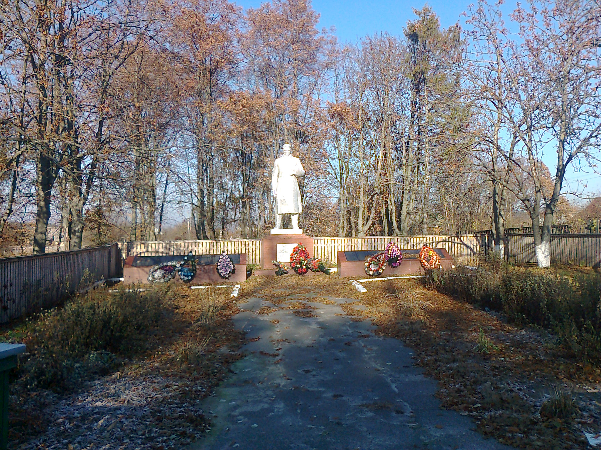
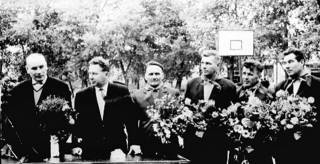

Із спогадів комісара Першого Бородянського партизанського загону Григорія Степановича Куцана.
...Йшов
важкий 1943 рік. Партизанський загін, яким командував Віктор Петрович
Данилюк, отаборився у глухомані Катюжанського лісу. Кожної ночі звідси
виходили народні месники на бойові завдання. Фашисти, що наводнили
навколишні села, добре відчували грізну силу партизанів.
...Після виконання бойових операцій у табір поверталися партизани. Лише групи, яку очолював Олександр Шефатов, не було.
– Що могло трапитися? – хвилювався командир загону. – Невже напоролися у Лісовичах на засідку.
– Не хочеться цьому вірити. Адже Шефатов досвідчений хлопець, – розмірковували бійці загону.
І
справді, у нічні мандри ходити Олександру доводилося не раз. Обминаючи
ворожі заслони, його група часто зустрічала «гостинцями» фашистів, що
пересувалися по дорозі Іванків-Димер до Лютізького плацдарму. Але на цей
раз хороброму командиру дійсно не поталанило.
Густий туман стелився по землі і за декілька кроків нічого не було видно. Опівночі партизани дійшли до Лісовичів. Пробралися до центру села. Навкруги панувала тиша. Зупинились.
– Сплять, гади! – прошепотів Григорій Скотаренко, підраховуючи ворожі автомашини.
І тут Шефатов допустив фатальну помилку.
–
Зайдемо до хати, – запропонував він. І не чекаючи згоди товаришів,
попрямував до хвіртки. Не встиг відкрити її, як раптом почулося:
– Хальт!
І
одночасно гримнув постріл. Поранений командир упав на землю. Довкола
озвалися ворожі автомати, у небо злетіли сигнальні ракети.
Прориваючись
крізь шквал вогню, вступаючи в запеклі поєдинки з карателями, партизани
не залишили свого командира, що стікав кров’ю. Час від часу міняли
напрями, щоб уникнути переслідування, несли його понад 15 кілометрів.
Здавалося, що сили ось-ось зрадять. Важка ноша утруднювала відхід. Кулі
не дозволяли підвести голову. Але кожний думав: за всяку ціну врятуємо
життя командира. А Шефатов уже не раз втрачав свідомість.
Першою зустріла розвідників партизанка Ангеліна Лакіза. Цілу ніч вона не спала.
– Чує моє серце, з ним сталася біда, – говорила дівчина. І всі зрозуміли: це вона про Сашка, про свого коханого.
Зачувши тріск сушняка, Ангеліна вибігла назустріч.
– Що з ним? – зойкнула і прожогом підбігла до саморобних носилок.
– Ангеліно! – простогнав Олександр, зустрівшись з переляканими очима своєї любої. – Пече, ох як пече!
Ангеліна мало не впала. Тоненькі плечі здригнулися.
– Заспокойся, не плач, – розгублено прошепотів партизан, немов почуваючи себе винним перед коханою.
– Не буду, Сашенько, не буду! – скривила вона вуста у вимушеній посмішці, ніжно гладячи його скуйовджений чуб і безкровні щоки.
Тільки термінова операція могла врятувати Олександру життя. Потрібен був лікар. Але де ж його взяти?
– Треба викрасти хірурга з німецького госпіталю. Другого виходу немає, – почувся голос політрука.
Госпіталь фашистів знаходився в приміщенні Катюжанської школи.
Негайно було послано групу партизанів на незвичайне завдання. Коли вже догоряв день, у табір привезли лікаря.
– Пізно, – сумно похитав головою командир.
Голова Шефатова ще лежала на руках у Ангеліни, котра, плачучи промовляла:
– Саша! Сашенько! Любий мій! Прокинься, благаю тебе!
...Поховали
Олександра Шефатова усім загоном з партизанськими почестями у
Катюжанському лісі. Біля дорогої могили партизани поклялися помститися
ворогові за смерть свого улюбленця. І вони виконали священну клятву.
Гарячі
бої партизанів із поліцаями були під Руднею-Димерською. Поліцаї забрали
партизанських коней і ті оголосили їм нещадну війну.
Улітку
1943 року німці якось дізнались, що партизанський загін буде переходити
у Бородянські ліси, ближче до залізниці і організували засідку,
перекривши дорогу Димер–Іванків. Але партизани перехитрили
ворогів. Щоб
збити їх зі сліду, партизани створили видимість, що їхній напрямок –
убік хутора Трость. Біля урочища «Бичаче» змушені були причаїтися, тому
що могли нарватися на другу засідку, до того ж на пошуки народних
месників було кинуто підрозділ фашистів, які нишпорили по навколишніх
лісах. Лише надвечір німці змушені були зняти облогу, бо все-таки
страшно боялися партизанського лісу.
...Сільські хлопці, які неподалік пасли корів, уже збиралися гнати худобу додому. Раптом з верболозу вийшов партизан.
– Стій, хто такі?
– Та ми сільські, пастухи.
Довелося
хлопцям затриматись до сутінок, поки весь загін не рушив на
Дудки. Тут партизани знищили
старосту-зрадника, роздали селянам зерно, зібране для потреб німцям. А
далі – Абрамівка і рейд у Бородянському лісі.
Тяжко
було жителям Катюжанки під час окупації. Постійний страх перед
вивезенням до Німеччини, тяжкі роботи на лісозаготівлях, голод і холод.
Лютували і німецькі прислужники – поліцаї, серед яких були і місцеві,
які в будь-який час могли розправитися з кожним. Але діставалося і їм.
На
лівому березі Дніпра діяв партизанський загін «Перемога», який
організували брати Науменки. Але час від часу загін перебирався і на
правий берег. Так партизанами цього загону був виведений з ладу
лісопильний завод, що знаходився в районі хутора Трость. Завод по
переробці деревини, що використовували німці для своїх потреб, був
спалений, виведений з ладу паровик. Заглянули партизани і в Катюжанку.
Зі спогадів Володимира ТихоновичаАнтоненка, колишнього вчителя Катюжанської школи, учасника Великої Вітчизняної війни.
«Це
було навесні 1943 року. Будинок поліції знаходився у приміщенні
нинішньої медамбулаторії, а сільська управа – у будинку нинішньої
сільської ради.
Біля
містка коло сільського ставка стояла стара-престара верба, велика й
розлога. Вона вже доживала свого віку, аж дупло утворилось у стовбурі та
таке, що в ньому могло вміститися 2-3 чоловіка.
У
селі поліцаїв саме не було, поїхали в Димер, а залишився лише один,
черговий, який у цей час сидів в управі. Два партизанські розвідники
зайшли у село і розмістились у дуплі дерева. Слідом за розвідниками
зайшли і партизани, яким ставилось завдання будь що взнати пароль,
розгромити поліцейський патруль біля лісопильні. Коли поліцай з вікна
управи побачив партизанів, він бігом кинувся до будинку поліції, щоб
повідомити про наліт партизанів. Не встиг добігти, як з верби вийшли
месники.
– Стій! Хто такий? – грізно запитали його.
–Осадчий Михайло Тимофійович, – у відповідь.
– Іуда ти, а не Тимофійович! Який пароль на сьогодні?
Злякано зиркаючи довкола очима, зрадник назвав пароль.
– Де поліція зараз?
– Частина у Трості на лісозаготівлях, а решта – у Димері.
– Збирайся з нами!
І
лісом вирушили на Трость. Там був своєрідний трудовий табір, куди
зганяли людей з кіньми та возами, змушували вивозити ліс, переробляли
його, виготовляли шпали для залізниць. Наглядачами тут були поліцаї.
Коли вже підходили до Трості, їх зупинив окрик:
– Стій! Хто йде?.
– Катюжанська поліція!
– Пароль!?
Після
названого паролю поліцай заспокоївся і підпустив «поліцаїв» ближче. Не
гаючи часу, партизани роззброїли вартового і рушили до караульного
приміщення. Грізний окрик «Встати, гади!» підкинув з тапчанів
переляканих поліцаїв, які спросоння не могли второпати, що сталось.
Прозріння так і не настало, бо їх тут же розстріляли. Просився Осадчий,
щоб простили, щоб узяли з собою у партизани, та не пожаліли зрадника
народні месники і розстріляли разом із поліцаями.
Пізніше
партизани дізналися, що один поліцай чудом залишився живим, бо пиячив у
одного зі своїх дружків на хуторі, а коли зчинилась стрілянина,
городами зумів утекти.
Розповідають,
що ще двох поліцаїв було поранено і вони змушені були звернутися до
сільської фельдшерки. Одному з них вона «допомогла», перев’язавши його і
дала укол, після чого він через день помер. Є думка, що вона також
якимсь чином була зв’язана з партизанами. Фельдшерка була душевною
людиною, підбадьорювала людей, у розмовах обережно настроювала жителів
Катюжанки допомагати партизанам.
Восени
1943 року на північ від Києва точилися запеклі бої за розширення
Лютізького плацдарму. Червона армія переможно наступала. Боям за Лютіж і
Ясногородку командування надавало особливої ваги, бо це був своєрідний
трамплін для визволення від фашистів столиці України.
Володимир БУБИР,
с. Катюжанка